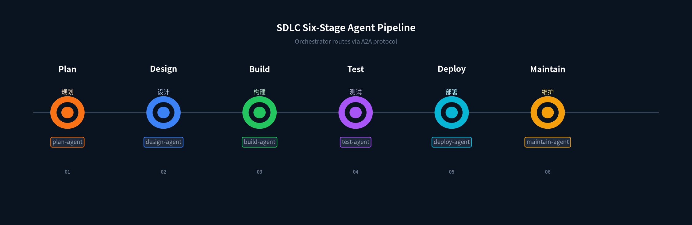
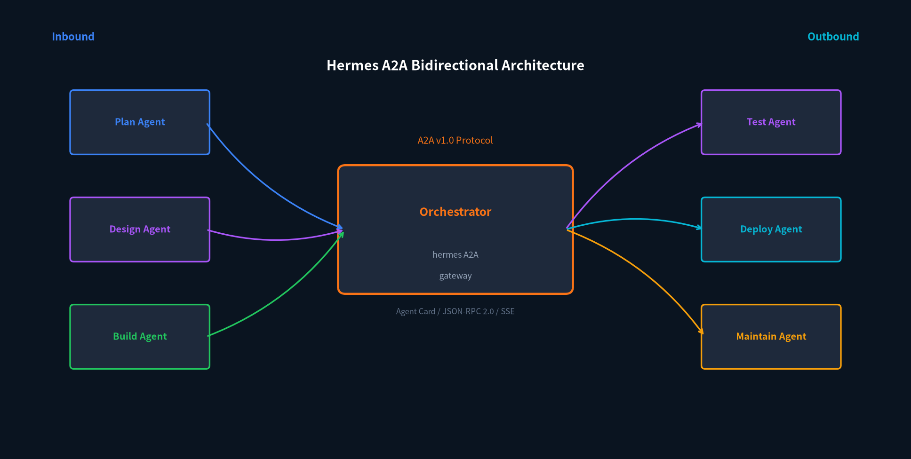
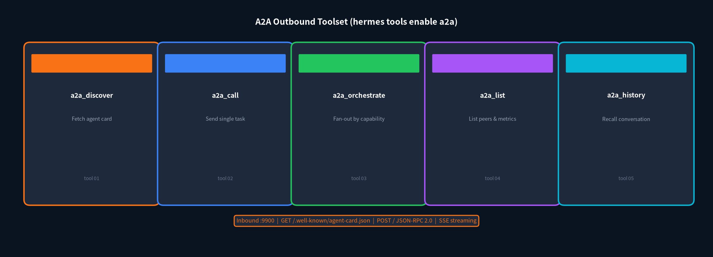
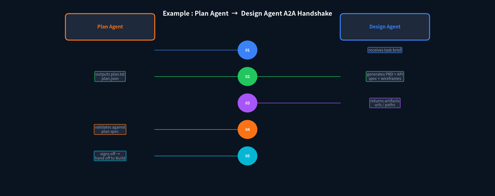

HERMES AGENT · A2A
A2A 协议配 Hermes Agent
把 SDLC 六阶段串成一条 Agent Pipeline
很多人聊 multi-agent，聊到最后就是一个乱哄哄的群聊 —— 每个 agent 都在说话，没人干活，也没人知道谁对谁错。
Hermes 对 multi-agent 的答案更硬一点：角色隔离 + 工具边界 + 可验证的交接。每个 agent 只干一件事、只拿该拿的工具、交付物必须有可验证的凭据（文件路径、URL、测试结果）。
如果多个 agent 跑在同一台机器上，Hermes 有 delegation（进程内子 agent）和 kanban（持久化任务队列）。但一旦要跨机器、跨框架协作 —— 比如桌面端的 Hermes 把任务甩给服务器上的 Research Agent，或者让 LangChain 里的 agent 调 Hermes 的 coding 能力 —— 就得靠 A2A 协议。
A2A（Agent2Agent）是 Linux Foundation 维护的开放协议 v1.0。Hermes 的 A2A 插件是双向的 —— 你的 agent 能调别人的，也能被别人调。

图 1 · SDLC 六阶段 Agent Pipeline
1
先把 A2A Gateway 跑起来
启用 A2A 很简单，一条命令或者改 config.yaml 都行。交互式向导会把端口、token 一起帮你填好。
# 方式一：交互式向导
hermes gateway setup # 选 A2A
# 方式二：直接改 ~/.hermes/config.yaml
gateway:
platforms:
a2a:
enabled: true
extra:
port: 9900
gateway 只是入站端 —— 让别人能调你。要让你的 agent 能主动调别人，还得启用出站工具集 a2a，默认是关的：
# 给 CLI / TUI 会话启用出站
hermes tools enable a2a --platform cli
# 给某个 IM 平台启用
hermes tools enable a2a --platform wecom
# 让入站 A2A 任务也能调 peer（agent chain）
hermes tools enable a2a --platform a2a
两个都开了，才算双向打通。入站提供服务，出站调用别人。
2
A2A 协议到底在传什么
Hermes 的 A2A gateway 暴露三样东西：
Agent Card —— GET /.well-known/agent-card.json，相当于 agent 的"身份证"，声明它有什么技能、需要什么认证。
JSON-RPC 2.0 —— POST /，标准方法包括 SendMessage、GetTask、CancelTask、SubscribeToTask。
SSE Streaming —— SendStreamingMessage 用 Server-Sent Events 逐帧推回复，适合长任务。
入站任务被注入到 gateway 的活动会话里 —— 同一个 agent、同一份记忆、同一套工具，回复作为 task result 返回给调用方。对话通过 contextId 做 key，所以 peer 可以发起多轮对话。

图 2 · Orchestrator 双向调度各阶段 Agent
3
五个出站工具怎么调
开了出站工具集之后，agent 多五个函数：

图 3 · 出站工具集 + 入站接口
用法很直觉。a2a_discover(url) 先看看对方有什么技能。a2a_call 发任务拿回复，支持 context_id 做多轮。a2a_orchestrate 可以按能力扇出 —— 比如对所有打了 research 标签的 peer 同时发同一个 query，mode 选 all（全要）、first（第一个回就停）或 best（Agent 自己挑最好的）。
常用 peer 可以预先写进 config.yaml 的 a2a_agents 块，省得每次传 URL 和 token。agent 直接叫名字就行："让 research agent 总结一下今天的 arXiv 新帖子。"
a2a_agents:
researcher:
url: "http://research-box.local:9900"
auth: { type: bearer, token: "..." }
timeout: 120
capabilities: [web_search, research]
4
SDLC 六阶段各挂一个 Agent
拿 SDLC 举个具体的例子。我们把 Plan、Design、Build、Test、Deploy、Maintain 六个阶段各挂一个 Hermes Agent，每个 agent 独立进程、独立模型、独立记忆和工具。一个 Orchestrator 通过 A2A 串起来。
Plan Agent —— 接收自然语言需求，产出结构化 plan.txt + plan.json（里程碑、验收标准、风险）
Design Agent —— 读 plan，产出 PRD + API spec + wireframes（用浏览器工具截图）
Build Agent —— 按 spec 实现代码 + 跑 lint + 基础单测
Test Agent —— 集成测试 + edge case 扫描 + 性能 benchmark
Deploy Agent —— 打包 + 推容器镜像 + 走 CD pipeline + smoke test
Maintain Agent —— 读监控日志 + 生成周报 + 触发修复任务
每个 agent 的工具是受限的。Plan Agent 只有文件和 web search。Build Agent 有终端和 git。Deploy Agent 只能走预定义的 deploy 脚本，不能随便 shell。这样即使 Build Agent 被 prompt injection 骗了，也没法直接改生产。
5
Plan Agent 怎么和 Design Agent 握手
好，具体来看两个 agent 之间是怎么通过 A2A 交互的。我们看 Plan Agent 交付给 Design Agent 这一步。

图 4 · Plan → Design 的 A2A 五段式交互
分五步走：
Step 01 —— Orchestrator 调 a2a_call("plan-agent", "需求：做一个多 agent SDLC 平台...")。Plan Agent 收到任务 brief。
Step 02 —— Plan Agent 跑完，输出 plan.txt + plan.json。Design Agent 拿到 plan，生成 PRD + API spec + wireframes。
Step 03 —— Design Agent 把交付物 URL 和路径回传给 Plan Agent（其实是回给 Orchestrator，Orchestrator 转发）。
Step 04 —— Plan Agent 读 design artifacts，检查是否满足 plan.json 里的验收标准。不满足就退回。
Step 05 —— 签字放行。Orchestrator 把 Design Agent 的 artifacts 交给 Build Agent，进入下一阶段。
注意第 4 步 —— Plan Agent 不是被动接受交付物，而是反过来验证。这就是 Hermes multi-agent 不是群聊的核心：交接必须可验证。Plan Agent 有 plan.json 里的验收标准，Design Agent 有 PRD 和 wireframes，两边对一下就知道有没有漏。
6
安全模型别大意
A2A 默认只绑 localhost（127.0.0.1）。对外暴露需要先设 token，再改 A2A_HOST。这是强制的 —— 没有 token 你没法把 A2A 接口开到外网。
# ~/.hermes/.env
A2A_HOST=0.0.0.0 # 必须先设 token 才能改
A2A_PORT=9900
A2A_BEARER_TOKEN=xxxxxxxxxxxxxxxxxxxxxxxx
# 或者用更细粒度的 per-peer token
A2A_PEER_TOKENS="plan-agent:tok1,design-agent:tok2,orchestrator:tok3"
还有几道防火墙：
Prompt injection 过滤 —— 入站文本被标记为不可信 peer 输入，对方不能触发斜杠命令。
出站脱敏 —— API key、JWT、token 等凭证形状的字符串在回复里会被替换掉。
反环机制 —— 每个 context 有 turn cap（默认 5，最多 20），防止两个 agent ping-pong 永远循环。
审计日志 —— 每次交换追加到 ~/.hermes/a2a_audit.jsonl。
设了 per-peer token 之后，每个 peer 的身份自动参与 rate limiting 和信任判定。A2A_TRUSTED_PEERS 可以做 allowlist。
7
什么时候用 A2A，什么时候不用
最后理清楚边界。Hermes 有三个多 agent 机制，各管各的：
同机器、进程内 —— 用 delegation，最快，子 agent 跑完自动回收上下文。
同机器、持久化队列 —— 用 kanban，任务挂起后可以等 cron 或另一个 agent 来捡。
跨机器 / 跨框架 —— 用 A2A。桌面端调服务器，Hermes 调 LangChain，任何符合 A2A v1.0 的 peer 都能对接。
A2A 最有价值的场景其实就是 SDLC 这种流水线 —— 每个阶段一个独立 agent，独立进程、独立模型、独立工具权限，用 A2A 串成一条清晰的交接链。Orchestrator 只做调度和最终验证，不做具体工作。
本文基于 Hermes Agent 官方 A2A 文档和 multi-agent 博客整理：